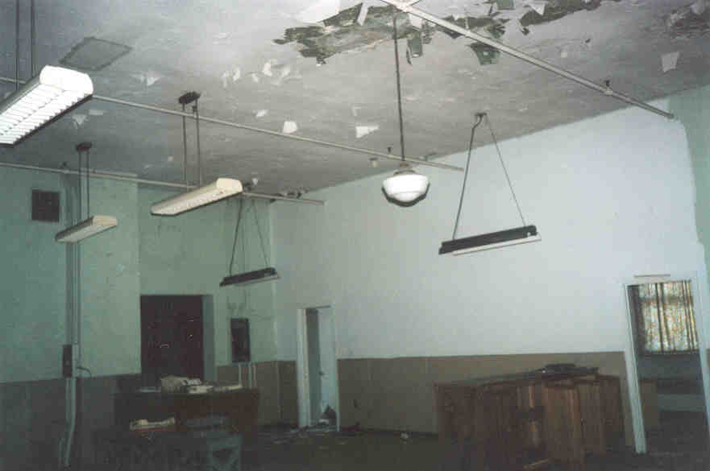
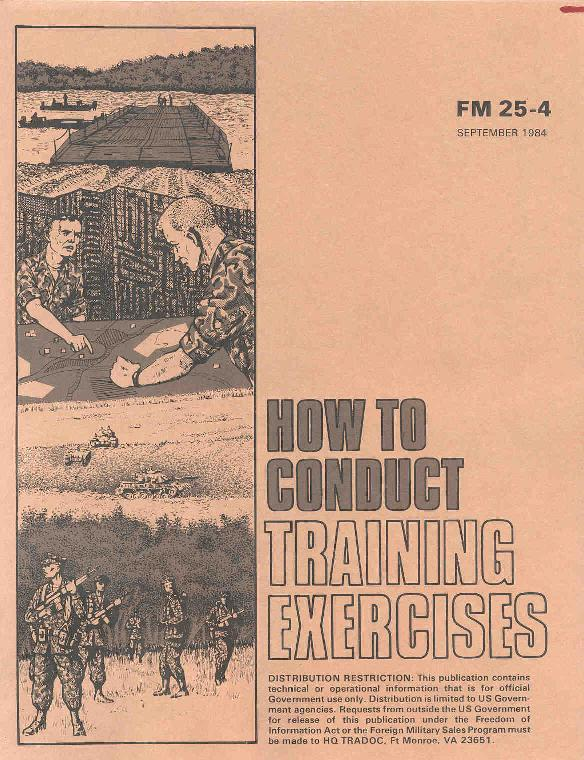
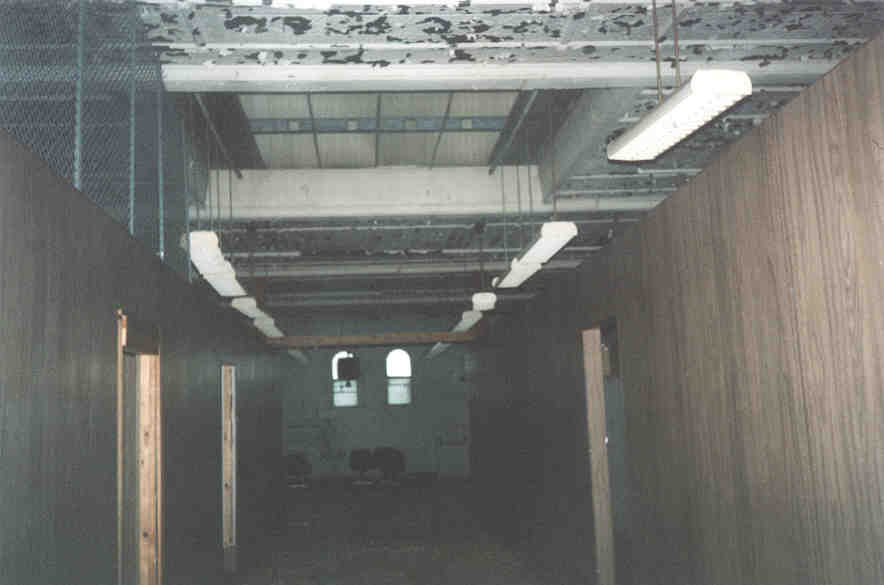
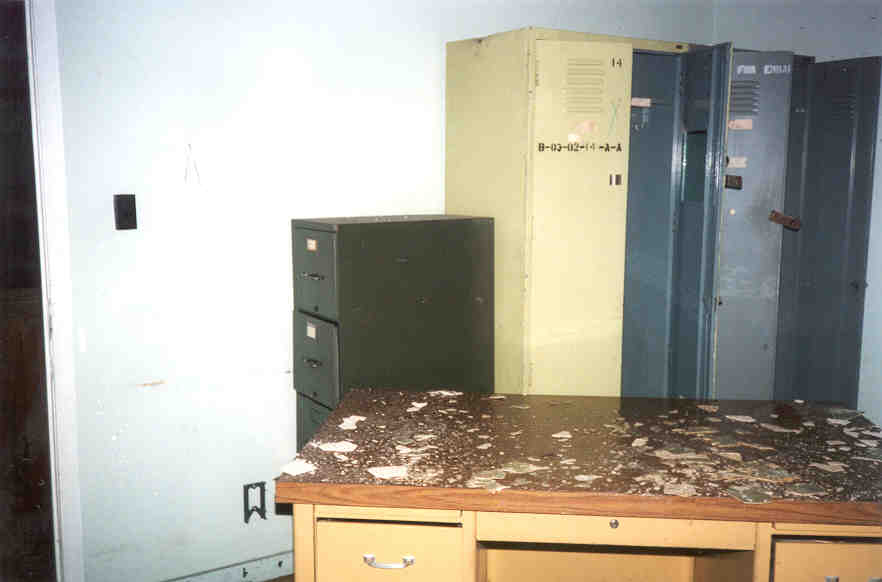
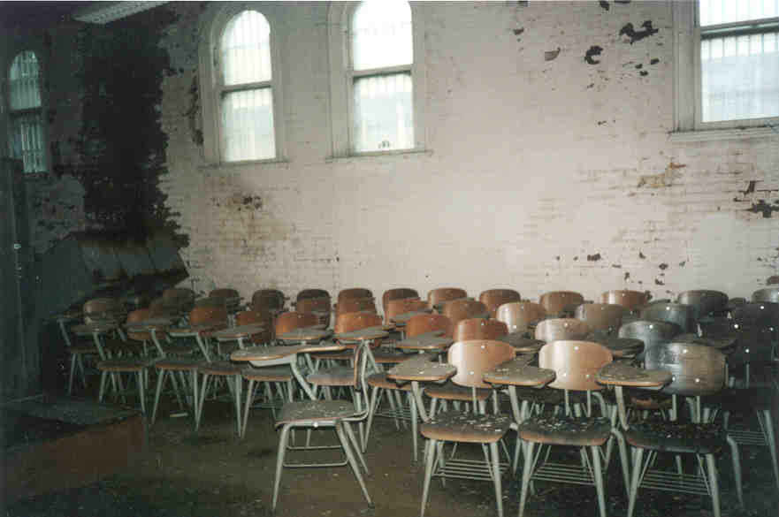
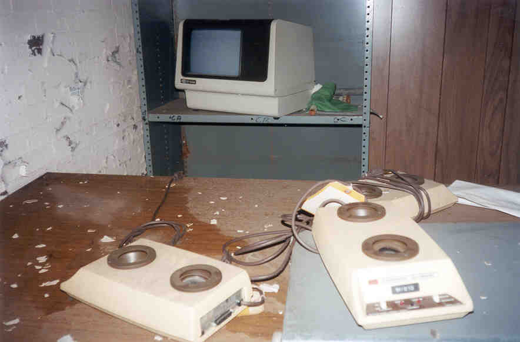
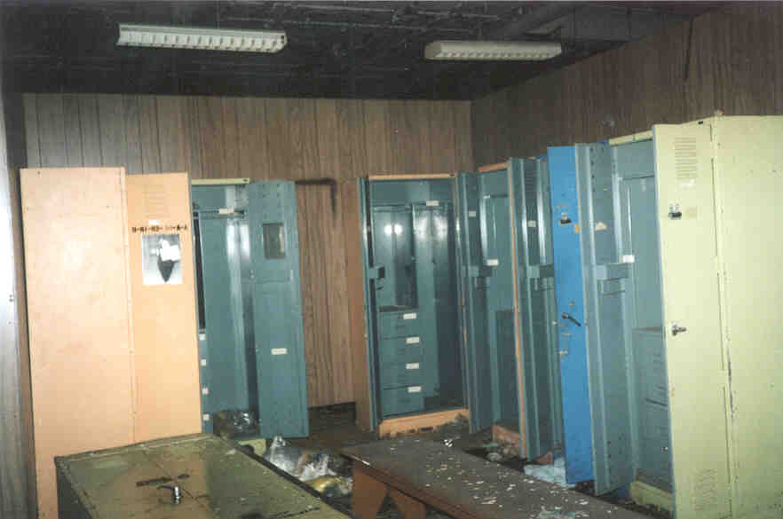
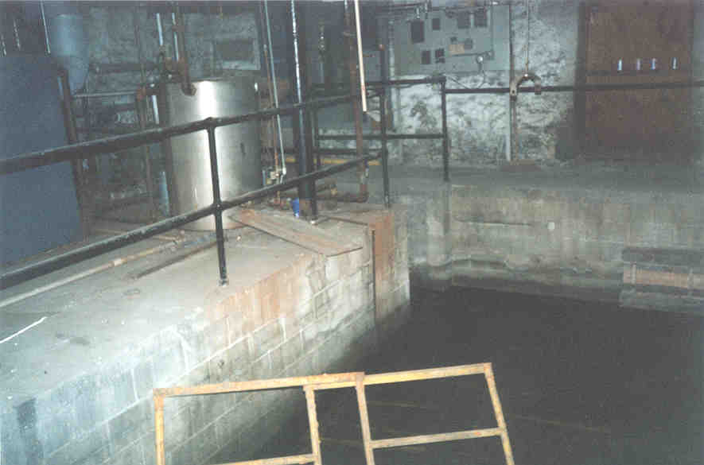
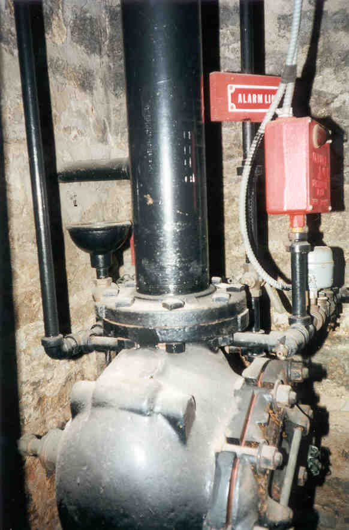
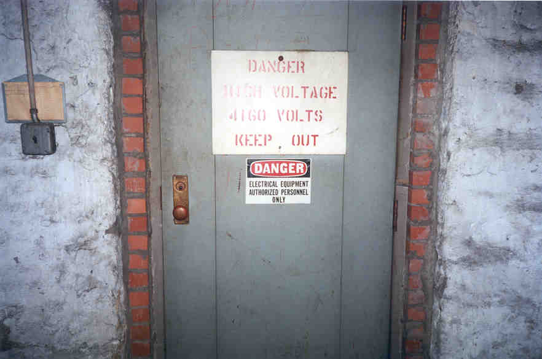

Building 103

The nameless building marked Number 103 at Fort Hayes was apparently a training or education building of some kind. When Jesus and I first entered we were frightened by the sound of water dripping from the roof, which was very leaky. The whole place is a wreck, especially the front room, which still contained a sort of front desk/counter thing.

The Front Room
Under the counter up front we found stacks of different government-issue manuals, all bound in the federal government's lovely uniform brown. How to Maintain a Campsite, How to Operate a Communications Post, even...

The manual is dated 1984, which starts to give us some idea when this building was last used. Another clue comes from a retired military man who e-mailed me:
"The last unit to be stationed in Building 103 was the 338th Army Reserve Band, which is now located at the Reserve Center out in Whitehall on Yearling Road. The Army never wanted to put any money into the building but kept us there a long time. We used the building in the following manner just before we left (for a short stint at Building 300, about two years, and then our permanent move, in 1994). From front to back--open area just inside front door: admin, paperwork, gathering area; first office on right: Bandmaster's office; second office on right: First Sergeant's office; third office on right (renovated by one of our Unit Administrators): UA's office; room just inside to left: female dressing room/latrine; latrine: self-explanatory; lockerroom on right: male lockerroom; caged area on right: supply, including instrument storage room; area on right: rehearsal area until about 1990, classroom afterwards, I don't remember where we got all those desks from, I think someone just kinda dropped them in our laps; back room, left-hand side: tv/relaxation area; right hand side: claasroom until 1990, then rehearsal area; the basement used to house a huge boiler; that's what was in the "pit" you saw. My understanding is that, prior to being the band's facility, the building was used as a stockade of some sort during WWII (hence the bars on the windows). It was an inprocessing building during WWI."

Next we went down the wide center hallway. On both sides were offices and classrooms with . In the big room at the back of the hallway there were dozens and dozens of high school-style desks. Apparently the soldiers took classes here.


Also in the back room we encountered some amusing relics from a time not-so-long gone: old-style modems, the kind you have to actually put your phone receiver onto for them to work. It's always funny to watch eighties movies that are supposed to be about high technology and then they use something like this.

Old-School Modems
Off of the main room was a locker room which we poked through a little bit. All of the lockers were empty and the floor was so wet it made puddles wherever you stepped.

Without a second floor to explore we went out and descended to the basement, which is accessible from the outside. It's at this point that I'd like to issue a WARNING. If you do explore this building, BE CAREFUL. My friend J. told me that during a previous visit to this basement he leaned against something and was shocked so badly that he screamed involuntarily and was thrown to the ground. We didn't know that the first time we went down, but when I saw the High Voltage signs I remembered that Louie the Lightning Bug says you gotta play it safe around electricity, so we avoided getting killed.

The Basement
Other than that, this basement is pretty cool. It had a sunken-in place full of pipes in the middle with about three inches of standing water (the place where the boiler used to be), and several closets and utility rooms with stuff in them.

Unfortunately, on our most recent trip to Fort Hayes they had begun to do work on the driveway and had obviously paid some attention to the buildings down here. Building 103 had nice new padlocks on the doors.

Back